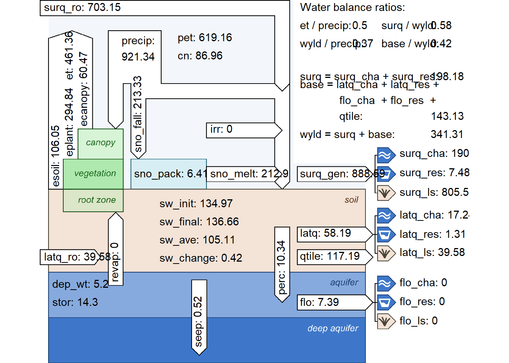

Section 12 Model Verification
note: this page is still under construction.
Preparation
Loading required packages, defining paths, and loading objects.
# Install/Update SWATdoctR if needed:
# remotes::install_git('https://git.ufz.de/schuerz/swatdoctr', force = FALSE)
require(SWATdoctR)
require(DT)We copy in our most up to date SWAT input files into our run_swat/
folder where we can modify them and see the changes in the model setup.
At this point in the project, our most up-to-date files are from our
FarmR setup. We have set overwrite = FALSE so that no existing
changes will be overwritten. This also means the existing files in
run_swat/ will not be overwritten, so make sure to delete any you do
not want anymore.
status <- file.copy(
from = list.files("model_data/cs10_setup/swat_farmR/",full.names = T),
to = "model_data/cs10_setup/run_swat/",
overwrite = TRUE, # change to TRUE if you want to overwrite
recursive = TRUE
)
print(paste(length(which(status == TRUE)), "files copied out of", length(status), "total"))## [1] "85 files copied out of 85 total"We also need our exe in this folder.
We are using the following EXE (feel free to change):
file.copy(
from = paste0("model_data/cs10_setup/", exe),
to = paste0("model_data/cs10_setup/run_swat/", exe), overwrite = T)## [1] TRUETo store any input files we have modified, I have created this directory:
Place any modified files you want to keep in there, and remeber to copy them into the run_swat/ directory when you want to use them in the setup.
Setup modifications
SWATFarmR generates land use labels longer than the max allowed 16 characters. To remedy this we can use the following function
“Plotting of variables at the harvest and kill of a crop requires that the management operations ‘harvest’ and ‘kill’ are set separately in the management schedules and not as a combined ‘harvest_kill’ operation. The following function fixes the issue.”
## [1] "No `hvkl` operations exist in 'management.sch'. File was not changed."12.1 Stage 1: Analysis of simulated climate variables
We are now ready to start verifying our model setup.
sim_nostress <-
run_swat_verification(
project_path = "model_data/cs10_setup/run_swat/",
start_date = "2015-01-01",
end_date = "2019-12-31",
years_skip = 1, # first three years skipped
nostress = 1, # Stress factors OFF @ 1
keep_folder = TRUE, # .runverify/ folder will NOT be deleted
outputs = c("wb", "mgt", "plt") # which things will be in output
)- To include all outputs, set
outputs = c("wb", "mgt", "plt") - To read more about how this function works, type
?run_swat_verificationinto the console.
We can save this model run like so: (feel free to rename the run)
run_name = "stage1"
saveRDS(sim_nostress,
paste0("model_data/cs10_setup/verification_runs/",
run_name,
".rds"))and we can load it like this (so that we don’t need to re-run).
run_name = "stage1" # change this to which run you want to load.
sim_nostress <- readRDS(paste0("model_data/cs10_setup/verification_runs/",
run_name,
".rds"))Modified from the Protocol:
- The climate variables daily precipitation and daily minimum/maximum temperatures are required inputs of a SWAT+ model setup (more info: protocol section 2.4).
We have these present.
- Further climate inputs such as solar radiation, relative humidity and wind speed are optional input variables and can be essential for the calculation of the potential evapotranspiration (PET).
We have these, see issue #42 (link)
- Climate inputs are grouped to weather stations in a model setup and
are assigned to spatial objects (HRUs, channels, reservoirs, etc.)
with the
nearest neighbormethod.
We only have 1 weather station so this is not of great relevance.
- The input of weather data and the assignment of climate variables to spatial objects can be sources for several issues which must be analysed:
Data structure of the climate input tables, units of the climate variable, no data flag, etc. was wrong and can result in unrealistically small or large values of the climate variables in the simulation.
Does not seem to be the case in our data
The nearest neighbor assignment allocates weather stations to spatial objects where the weather records do not represent the actual weather conditions in a spatial object well. This can for example be an issue in complex terrain.
Should not be a concern for us (for now) since we only have a single met station
The selected method for the calculation of PET results in an under/overestimation of PET when compared to estimates of PET for the region. In such cases other methods for the simulation of PET which are included in SWAT+ should be tested if they better fit the regional conditions and available weather inputs (see more Additional settings).
We are having an underestimation of ET from Ecanopy, so it might be an idea to switch the method See issue #62
Large implausibilities in the weather inputs can be identified in analyses of annual basin averages of the simulated climate variables. Simulated annual and average values of climate variables must be comparable to observation data and/or region specific literature values. Any larger deviations of precipitation can indicate errors in the input file or an inappropriate assignment of weather stations to spatial units.
We have pure observations, so no simulated data.
If the lapse rate option is active (Read more in Additional settings), it may be another potential reason for deviations from observations.
We are discussing this topic in issue #39 (link). It has been disseminated in Section 12.1.1
12.1.1 Lapse rate
From the SWAT+ changelog, we can see that setting the lapse parameter to 1 allows for adjustment of temperature and precipitation based off of elevation.

Figure 12.1: Lapse parameter from REVISION 60.5.4 documentation
The plaps parameter allows for adjustment of precipitation amounts per
kilometer elevation change. The default is set to 0. The tlaps
parameter allows for adjusting temperature per kilometer elevation, and
it’s default is 6.5C/km.

Figure 12.2: The tlaps and plaps parameters from the REVISION 60.5.4 documentation document
Let us check the elevation differences in our catchment to see if these parameters could have a meaningful effect.
dem_path <- "model_data/cs10_setup/optain-cs10/data/raster/dem.tif"
library(terra)
dem_rast <- rast(dem_path)
minmax(dem_rast)## dtm3_ns_v5
## min 50.50
## max 251.91Max elevation change of 200 m is not much, but it could very well have an effect on snowfall / vs. precipitation. The max temperature adjustment would be:
## [1] 1.31.3 Degrees Celsius is significant, therefore we will enable tlaps and
keep the default value. 200m does not seem like enough to justify using
the plaps parameter, so we will leave it at 0
And load in codes.bsn and parameters.bsn
### Loading parameters
codes_path <- "model_data/cs10_setup/run_swat/codes.bsn"
parameters_path <- "model_data/cs10_setup/run_swat/parameters.bsn"
codes_bsn <-
read.table(
file = codes_path,
skip = 1,
header = T,
sep = "",
colClasses = "character"
)
parameters_bsn <-
read.table(
file = parameters_path,
skip = 1,
header = T,
sep = "",
quote = "",
colClasses = "character"
)
### Setting parameters
codes_bsn$lapse = 1
parameters_bsn$tlaps = 6.5
parameters_bsn$plaps = 0
### Writing Headers
write_path <- "model_data/cs10_setup/swat_doctr_mod/"
write.table(
"codes.bsn header, modified by CS-10 workflow section 11.1",
file = paste0(write_path, "codes.bsn"),
sep = " ",
row.names = F,
col.names = F,
append = F,
quote = F
)
write.table(
"parameters.bsn header, modified by CS-10 workflow section 11.1",
file = paste0(write_path, "parameters.bsn"),
sep = " ",
row.names = F,
col.names = F,
append = F,
quote = F
)
### Writing file contents
write.table(
codes_bsn,
file = paste0(write_path, "codes.bsn"),
sep = " ",
row.names = F,
col.names = T,
append = T,
quote = F
)
write.table(
parameters_bsn,
paste0(write_path, "parameters.bsn"),
sep = " ",
row.names = F,
col.names = T,
append = T,
quote = F
)12.1.2 Climate variables
Over or underestimated PET can indicate errors in the temperature input files (and if provided in the solar radiation, relative humidity and wind speed inputs).
SWATdoctRprovides the functionplot_climate_annual()to analyse the annual simulated basin averages of climate variables.

Figure 12.3: Climate plot of CS10 generated by SWATDoctR
- The first panel shows ET fractions. Current version of SWAT+ often has implausible ET fractions!
Are these values plausible?
No – tracking in issue #62
- The second panel shows the precipitation fractions rainfall
(
rainfall) and snowfall (snofall).
Are these values plausible?
Yes. Resolved in issue #43
- The third panel shows the annual temperature values.
Are these values plausible?
Yes.
- The fourth panel shows the relative humidity values.
Are these values plausible?
Answer: resolved in issue #42) but are they plausible? Csilla
- The fifth panel shows wind speed.
Are these values plausible?
Resolved in #42, Csilla plausible?
- The sixth panel shows the annual sums of solar radiation. A comparison to literature values of annual solar radiation sums for the region can indicate issues in this input.
Are these values plausible?
Yes, values for the Oslo area seem to be around 4000 MJ – Csilla do you agree?
12.1.3 Snowfall and Snowmelt
- The analysis of mean monthly precipitation (output variable
precip), snowfall (output variablesnofall) and snow melt (output variablesnomlt) sums and their comparison with region specific information (or in the best case observations) provides insight in seasonal dynamics of the precipitation input. Particularly in snow impacted catchments a first verification of snowfall is valuable to see whether precipitation in solid form is simulated, a snow storage can build up and cause increased spring runoff through snow melt. The hydrological cycle of some catchments may be dominated by spring flood events which must be reflected by the simulated processes. Any observed implausibility in such analysis can indicate issues in the weather inputs or require to pay attention in the calibration of model parameters which control the simulation of snow processes (snofall_tmp,snomelt_tmp,snomelt_lag).
CS10, a Boreal catchment, is impacted by snow melt – this is relevant to the verification

Figure 12.4: Precipitation and Snowmelt on a monthly average basis, as generated by SWATDoctR
This has been resolved in issue #43. (link). Are these values plausible csilla?
- In situations where not all required climate inputs are available which are necessary to estimate PET with PM method the estimates will be more uncertain and annual PET sums may differ to regional values. Then the use of a simpler method for the calculation of PET can be a valid solution.
We do not need a simpler method since we have the required data

12.2 Stage 2: Simulation of management operations
Development of management tables is complicated and complex – and thus error prone. Mistakes in this area do not produce any errors or warnings making them easy to miss.
All operations which are triggered in a SWAT+ simulation run are written into the file ‘mgt_out.txt’
To verify the operations, we are going to compare scheduled and simulated operations for specific HRUs by random sampling.
For this, we need a SWAT+ run with management outputs. If we have already run this code, we do not need to run it again, and can just load it in:
run_name = "spacing800all"
veri_mgt <-
readRDS(paste0("model_data/swat_doctR/verification_runs/", run_name, ".rds"))Skip this code block, unless you want to re-run SWAT+
veri_mgt <-
run_swat_verification(
project_path = doctr_path,
keep_folder = T
)
run_name = "spacing800all"
saveRDS(veri_mgt,
paste0("model_data/swat_doctR/verification_runs/",
run_name,
".rds"))From the Protocol:
“The function report_mgt() generates an overview report where the
scheduled and triggered operations are matched and compared for each
management schedule that was implemented in the simulations. The
function prepares the scheduled management operations that were written
in the input file ‘management.sch’ in tabular form and randomly samples
one HRU for each defined schedule from the triggered management
operations (from the output file ‘mgt_out.txt’). The comparison is only
done for operations that were defined with a fixed date in the
management schedule and operations which are triggered by decision
tables will be excluded.”
“Applying the function report_mgt() for the model verification
simulation outputs returns a table with an overview of the operations
which were scheduled but not triggered or operations where ‘op_data1’
differs in the scheduled and triggered operations.”
Seems like there are no issues. I am not sure if this is a good or bad thing :D.
“The report_mgt() function is a good starting point to explore the
triggered management. But this analysis can be error prone. Still the
safest way to analyse the triggered and the scheduled managements is to
compare the input and output tables. SWATdoctR provides the function
print_triggered_mgt() to print the triggered managements for
individual HRUs. For selecting HRUs e.g. with a specific management the
helper function get_hru_id_by_attribute() can be useful. This table
can be visually compared with the management input table
(‘management.sch’)”
To see the operations of a specific management schedule:
test <- get_hru_id_by_attribute(veri_mgt, mgt = "a_001f_1_drn_mgt_1731_1")
tables <- print_triggered_mgt(sim_verify = veri_mgt, hru_id = test$id[1])
datatable(tables)“Operations which are missing in the simulated management schedules must be checked in the ‘management.sch’ input file. By answering the following questions for the scheduled management operations their proper implementation in the model setup can be verified:”
- Are the date sequences in the scheduled operations correct and in a right order (mistakes in assigned month and day values)?
Answer:
- Does the variable
op_data1point to the correct entry in the respective input data file? Does the label exist in the input file? E.g. does definedop_data1exist in ‘tillage.til’ for tillage operations, or does definedop_data1exist in ‘plant.plt’ for plant operations
Answer:
- Does the variable
op_data2point to the correct entry in the respective operations file (‘.ops’)? E.g. does harvest operation defined withop_data2exist in ‘harv.ops’.
Answer:
12.3 Stage 3: Analysis of unconstrained plant growth
This will be a two-tiered approach (with and without stress factors)
“The function plot_variable_at_harvkill() function summarises the
state of variables at the time of harvest/kill operations for all crops
in a model setup and thus provides a general overview”
“the function plot_hru_pw_day() allows detailed analyses of the daily
time series of HRU related variables, which then can only be performed
for a few HRUs of a model setup.”
update_landuse_labels currently has its issues. See here
hru_wb_check <- check_hru_waterbalance(
veri_mgt,
check = c("precip", "et", "runoff", "sw", "cn"),
ignore_lum = NULL,
add_values = TRUE
)
datatable(hru_wb_check)plot_waterbalance currently broken, see here
Related Minor Issues
Getting drainage yet? - #16
Atmodep not read - #44